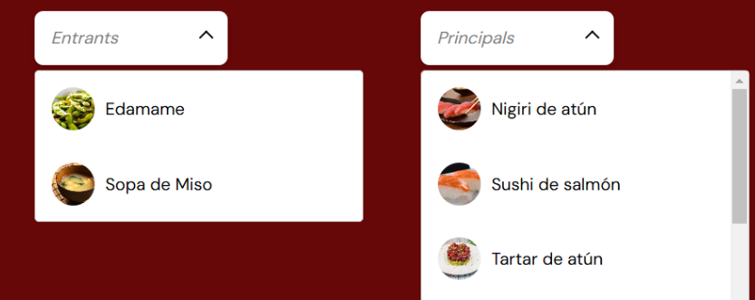
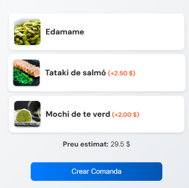
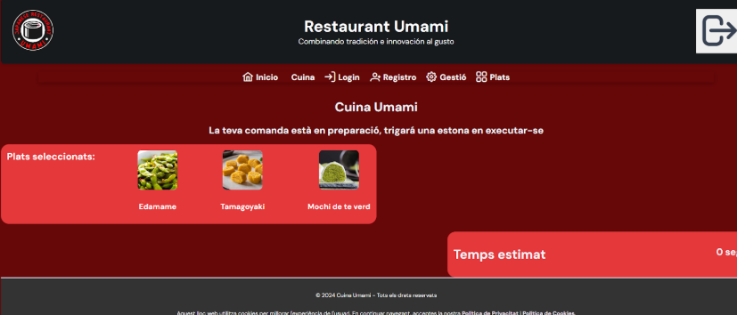
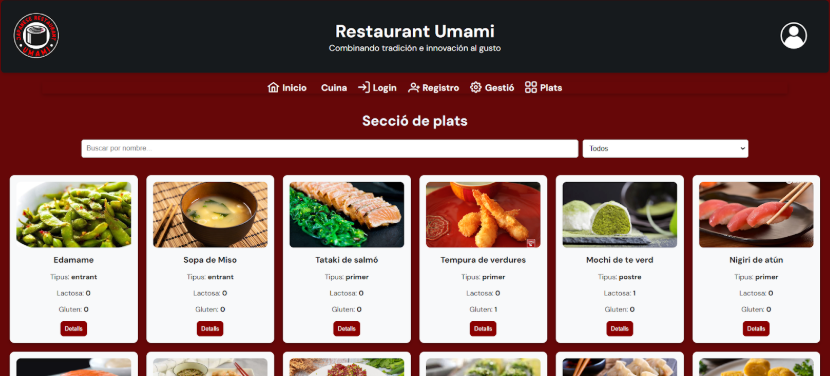
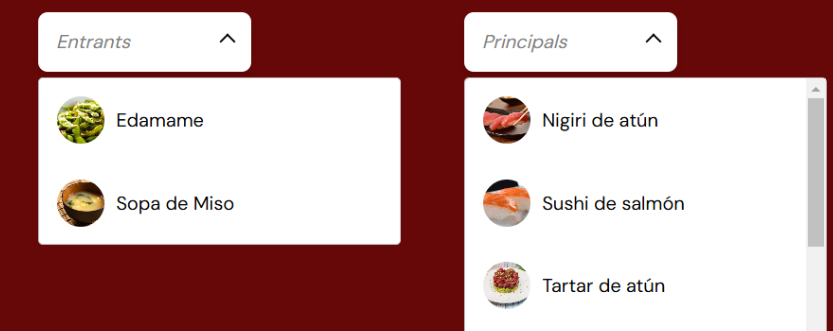
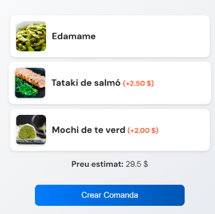
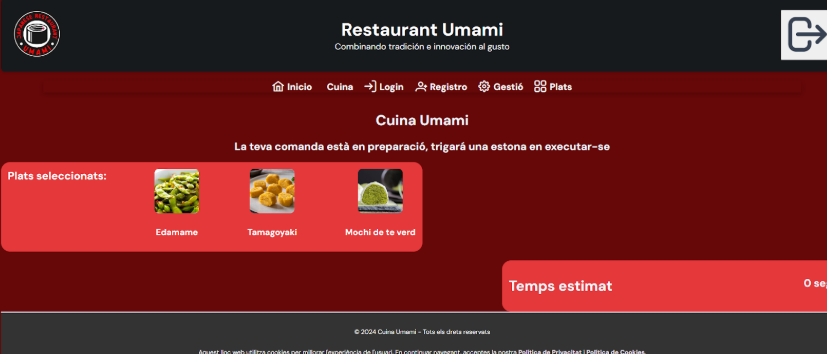
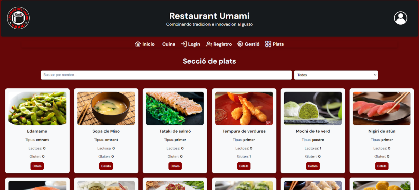

Lamin Manneh
Desenvolupador web | Apassionat per la tecnologia

Desenvolupador web | Apassionat per la tecnologia
Des de petit, la programació sempre m’ha fascinat. Encara que no vaig tenir l’oportunitat d’apuntar-me a un curs des del principi, la curiositat per entendre com funcionaven les aplicacions i el programari em va portar a experimentar pel meu compte. Aquest interès natural em va impulsar a endinsar-me en el món del desenvolupament web, i actualment estic cursant un Grau Superior en Desenvolupament d’Aplicacions Web.
A diferència de molts en aquest sector, que ho fan només per la sortida econòmica, jo visc la programació amb passió. No és només una feina per a mi, sinó una manera de crear, innovar i resoldre problemes d’una forma única. Cada línia de codi és un repte i una oportunitat d’aprendre i millorar.
El meu objectiu és formar part de grans empreses tecnològiques per guanyar experiència i, en el futur, emprendre els meus propis projectes. Sempre busco reptes que em facin créixer professionalment i que em permetin portar la meva creativitat al següent nivell.
He planificat el disseny d'aquesta pàgina pensant en el meu amor pel mar, ja que m’apassiona l'oceà i tot el que representa. La temàtica de les onades i la ballena reflecteix aquesta connexió amb el món marí.
Pots descarregar el meu currículum aquí: Descarregar PDF
Actualment estic treballant amb un projecte
Una aplicació web destinada a ajudar les persones a gestionar millor els seus ingressos i despeses, amb eines d’anàlisi financera i pressupostos personalitzats.
Viag desenvolupar la web d’un restaurant de menjar japonès anomenat Umami. Aquesta plataforma permetrà als clients explorar el menú, fer reserves en línia i conèixer més sobre la cultura gastronòmica del Japó.
 







La meva passió per la tecnologia i els reptes m'impulsa a voler formar part de grans empreses, on pugui aprendre, créixer i aportar valor. Sempre busco nous desafiaments per millorar les meves habilitats i crear solucions innovadores.